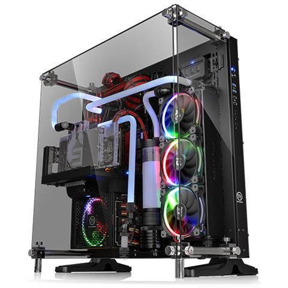

CASE

Normalmente il telaio di un case è in lamiera metallica SECC (dall'inglese "Steel Electrogalvanized Cold-rolled Coil", un tipo di acciaio dal basso costo ed elevata conducibilità termica) oppure in alluminio, esistono tuttavia anche telai artigianali fatti con altri materiali (vedi modding). L'alimentatore è generalmente alloggiato in un'area angolare del case; nella parte centrale sono presenti diversi alloggi atti a contenere le periferiche di archiviazione di massa e di lettura. Nei computer desktop a torre verticali la scheda madre è ancorata sul pannello destro - da un punto di vista frontale - del case. In genere un case ha diversi vani per drive da 5,25" e da 3,5" che permettono l'installazione di dischi rigidi, lettori floppy, lettori e masterizzatori CD/DVD e lettori di schede di memoria. Il pulsante d'accensione e di reset (che permette di riavviare il PC) sono normalmente situati in una posizione accessibile all'utente. Nei pressi dei due pulsanti possono esserci due piccole spie, alimentate da appositi connettori collegati direttamente alla scheda madre, per indicare lo stato di accensione del computer e l'attività del disco rigido. Sul frontale possono essere presenti i cassetti scorrevoli per l'inserimento ed il disinserimento di CD e dischetti floppy. Anche le porte di comunicazione USB "frontali" e le prese per cuffie e microfono sono normalmente installate in una posizione accessibile all'utente, così da agevolarlo nell'inserimento dei relativi dispositivi. Sul retro sono accessibili tutte le porte e interfacce di connessione con le altre periferiche presenti sulla scheda madre, come per esempio la tastiera, il mouse, il monitor e altri.